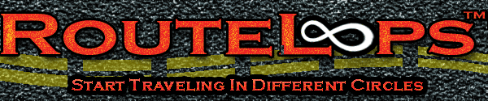

free, map, maps, routes, run, running, bicycle, bicycling, bike, biking, cycle, cycling, train,
training, marathon,
running map, running maps, running routes,
bicycle map, bike map, cycle map,
bicycle maps, bicycle routes, bike maps, bike routes, biking maps, biking routes, cycling maps,
cycling routes,
marathon training,
free running map, free running maps, free running routes,
free bicycle map, free bicyle maps, free bike maps, free bike routes, free biking maps, free biking routes,
cue, sheets, cue sheets
|

|
RouteLoops is the site that creates free, custom routes for running and biking that begin and end at the same location. Just
enter a starting location and a distance, and you will receive a custom route, of whatever
distance you specify, starting and ending at your location.
|
Relic. To remove, need to remove from javascript also.